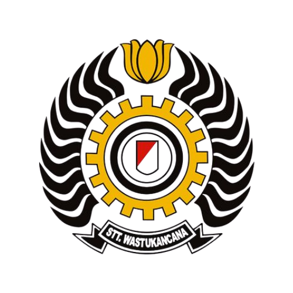

Aufa Siti Dhiyaun Nasywa
Saya adalah Mahasiswa di Sekolah Tinggi Teknik Wastu Kancana
Saya adalah seorang pelajar yang tertarik pada bidang Teknologi dan pada bidang Graphic Design. Saya mampu dan telah mendesain beberapa poster atau konten di instagram semasa SMA. Contoh desain yang telah saya buat ada di menu "Portofolio".